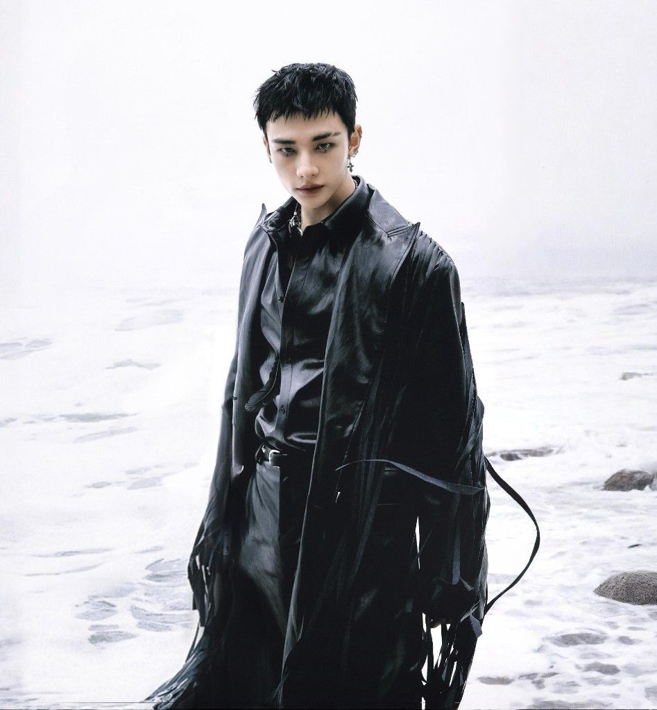
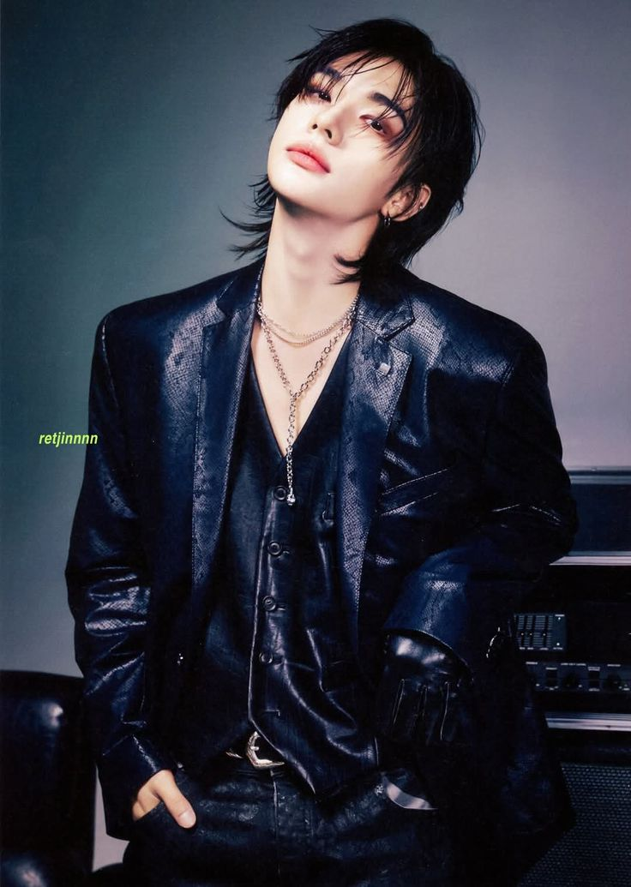
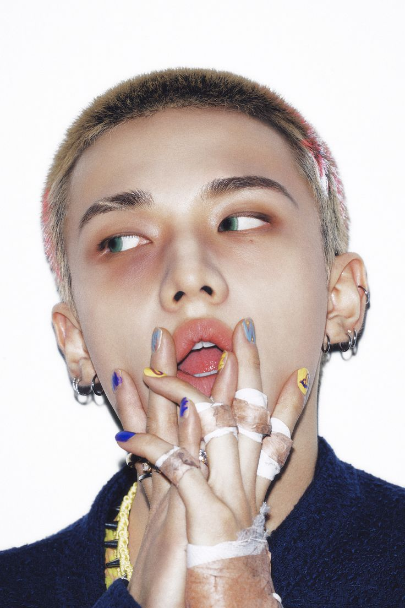

Hwang Hyun Jin (황현진)
Perfil del Artista
Dramas
A-TEEN 2 (Naver TV, 2019) - Aparición especial / Cameo
Programas de Televisión
Show! Music Core (MBC, 2019-2021) MC Principal junto a Cha Ni y Min Ju
Weekly Idol (03.04.19) Ep. 401 & (14.11.18) Ep. 381
Idol Room (JTBC, 18.09.2018) Ep. 20 junto a GOT7
Stray Kids (Mnet, 2017) - Programa de supervivencia
Programas de Radio
(SBS) Power FM Young Street radio (15.04.2019) junto a Han, Felix y Seung Min
(SBS) Choi Hwajeongs Power Time (12.04.2019) junto a Chan y Felix
(MBC) Idol Radio (09.02.2019) Ep. 129 junto a Lee Know y Ji Beom de Golden Child
(SBS) POWER FM Park Sohyun's LOVE GAME (03.11.2018) junto a Chan y I.N
(SBS Radio) NCT Night Night (15.11.2018) junto a I.N, Seung Min, Felix y Han
Premios y Reconocimientos
2025 10th Asia Artist Awards: Best Choice
2021 K-CHAMP Awards: Best Weekly Idol Individual Cam (Male)
Curiosidades
Estudios: Seoul Performing Arts High School (SOPA), Practical Dance Department (Graduado).
Periodo de entrenamiento: 2 años.
Modelo a seguir: Jin Young de GOT7.
Hobbies: Dibujar y pintar, bailar, hacer deporte y escuchar música.
Artistas favoritos: DEAN y Crush.
Idiomas: Coreano (Materno) e Inglés (Intermedio).
Vivió brevemente en Las Vegas (EE. UU.) a los 6-7 años de edad, donde utilizaba el nombre Sam.
Tiene registradas 5 canciones con derechos de autor a su nombre ante la KOMCA.
Compuso la hermosa y sentida canción "Little Star" en honor a su perrito Kkomi.
Reconocido embajador global de marcas de alta costura mundial como Versace.
Galería de Fotos


